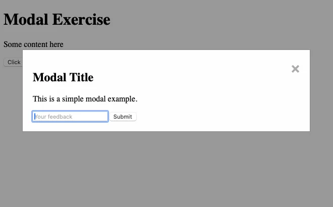

Modals - Ponder activities.
Preparation #
It is recommended to review Modals - Introduction before you start. You will also need your editor open with some code provided below. Create three files: modals.html, modals.css, and modals.js.
html #
<!-- modals.html -->
<!DOCTYPE html>
<html lang="en">
<head>
<meta charset="UTF-8" />
<meta name="viewport" content="width=device-width, initial-scale=1.0" />
<title>Modal Exercise</title>
<link rel="stylesheet" href="modals.css" />
<script src="modals.js" defer></script>
</head>
<body>
<div
id="modal"
class="modal"
role="dialog"
aria-labelledby="modal-title"
aria-modal="true"
aria-hidden="true"
>
<section class="modal-content">
<span class="close-button" aria-label="Close modal">×</span>
<h2 id="modal-title">Modal Title</h2>
<p id="modal-description">This is a simple modal example.</p>
<input type="text" placeholder="Your feedback" />
<button>Submit</button>
</section>
</div>
<header><h1>Modal Exercise</h1></header>
<main>
<p>Some content here</p>
<button id="open-modal">Click Me!</button>
</main>
</body>
</html>
These activities will be most effective if you TRY them first before you look at the solution. And after you do look at the solution...DO NOT copy and paste the code. Read through it, try to understand what it is doing...then go fix your code.
Activity 1 #
You were given the HTML for a simple Model, as well as a button to trigger it. We should start by styling it.
Check out the screenshot below to see what we are shooting for.

We are going for a full overlay with this modal. Here are the characteristics we want:
- The modal should cover the entire window.
- The modal should have a background color that is dark and semi transparent.
- The modal content should be centered horizontally.
- The modal content should have a light background color.
- The modal should have a close button in the top right corner that is large enough to easily hit with mouse or finger.
- The modal should be on top of all other content.
- The modal content should have some padding and margin added for white space.
Spend some time implementing the CSS to style your modal. Once you are done check the solution below. Then make sure to add display:none to your modal CSS to hide the modal by default.
Solution 1
.modal {
display: none; /* Hidden by default */
position: fixed; /* Stay in place */
z-index: 1000; /* Sit on top */
left: 0;
top: 0;
width: 100vw; /* Full width */
height: 100vh; /* Full height */
background-color: rgba(0, 0, 0, 0.4); /* Black w/ opacity */
}
.modal-content {
background-color: #fefefe;
margin: 15% auto; /* 15% from the top and centered */
padding: 20px;
border: 1px solid #888;
width: 80%; /* Could be more or less, depending on screen size */
}
.close-button {
color: #aaa;
float: right;
font-size: 28px;
font-weight: bold;
}
.close-button:hover,
.close-button:focus {
color: black;
text-decoration: none;
cursor: pointer;
}Activity 2 #
Next we need to add the Javascript that will allow us to open and close our modal. We need to change the display:none on the modal back to display:block in order for it to show. An easy way to do this would be to add new class to the modal.
- In the
modal.jsfile add the code to get the open button, close button, and modal from the DOM. - Add a class called
.opento your CSS. In that class setdisplay: block - Add function called
openModalthat will add theopenclass to the modal. - Add a function called
closeModelthat will remove theopenclass from the modal. - Add an event listener to the open button that will call
openModalwhen clicked. - Add an event listener to the close button that will call
closeModalwhen clicked. - Test your code to make sure that the modal will open and close.
If you run into issues, check the partial solution below
Solution 2
const modal = document.querySelector("#modal");
const openModalButton = document.querySelector("#open-modal"); // Assume you have a button to open the modal
const closeModalButton = document.querySelector(".close-button");
function openModal() {
modal.classList.add("open");
}
function closeModal() {
modal.classList.remove("open");
}
openModalButton.addEventListener("click", openModal);
closeModalButton.addEventListener("click", closeModal);
Activity 3 - #
Our modal now opens and closes, but we can add a couple more things that will improve the usability and accessability of the modal. We can make it easier to close, and address a couple of accessability issues.
- We added an attribute to our modal earlier called
aria-hidden="true". This tells screen readers to ignore that content. When the modal is open we should change that tofalseso that the screen reader will stop ignoring it. Modify theopenModelfunction to set that tofalse, then modify thecloseModelfunction to set it back totrue. - We can also add a keydown event listener to the modal that will close it when the
esckey is pressed- add and event listener to the
windowwatching for akeydownevent. - If the key that triggered the event was
Escape(look atevent.key) then call thecloseModalfunction
- add and event listener to the
- It is also common for a modal to close if a user clicks outside of the content area of the modal
- Add another event listener to
windowthis time looking for aclick. If the click happened outside ofmodal-contentthat means is happened on themodal(event.target == the modal), so we should close the modal.
- Add another event listener to
- Test your code to make sure that the modal will close when the
esckey is pressed and when you click outside of the modal.
Solution 3
const modal = document.querySelector("#modal");
const openModalButton = document.querySelector("#open-modal"); // Assume you have a button to open the modal
const closeModalButton = document.querySelector(".close-button");
function openModal() {
modal.classList.add("open");
modal.setAttribute("aria-hidden", false);
}
function closeModal() {
modal.classList.remove("open");
modal.setAttribute("aria-hidden", true);
}
openModalButton.addEventListener("click", openModal);
closeModalButton.addEventListener("click", closeModal);
window.addEventListener("click", function (event) {
// close the modal when user clicks outside of the .modal-content
if (event.target === modal) {
closeModal();
}
});
// allow the escape key to close the modal as well.
window.addEventListener("keydown", function (event) {
if (event.key === "Escape") {
closeModal();
}
});